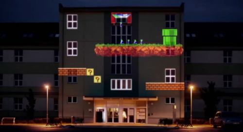
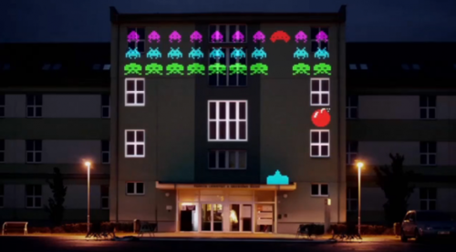
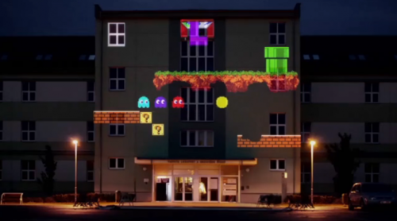

Tue, 28 Jun 2011 14:43:00 · games · 8bit · invaders · supermario
Classic 8 Bit Games Projected in 3D Space
  
Pensée comme un hommage aux vieux jeux-vidéo, cette projection mapping très réussie se dévoile en vidéo. Une réalisation mélangeant avec talent les personnages Pac-Man, Mario, Lemmings et Space Invaders par Dark’s Playground. A découvrir en video ici.